This practice turned what could have been an exhausting journey—over ten hours round-trip, twice a week—into into a meaningful and rewarding routine. It made me pay closer attention to the cities I might have otherwise overlooked and allowed me to capture beautiful moments along the way.
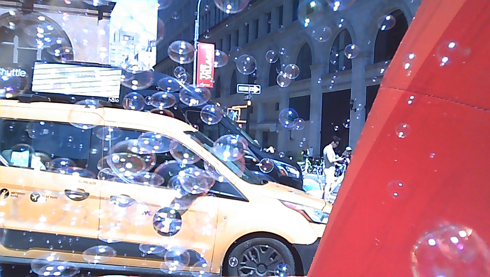
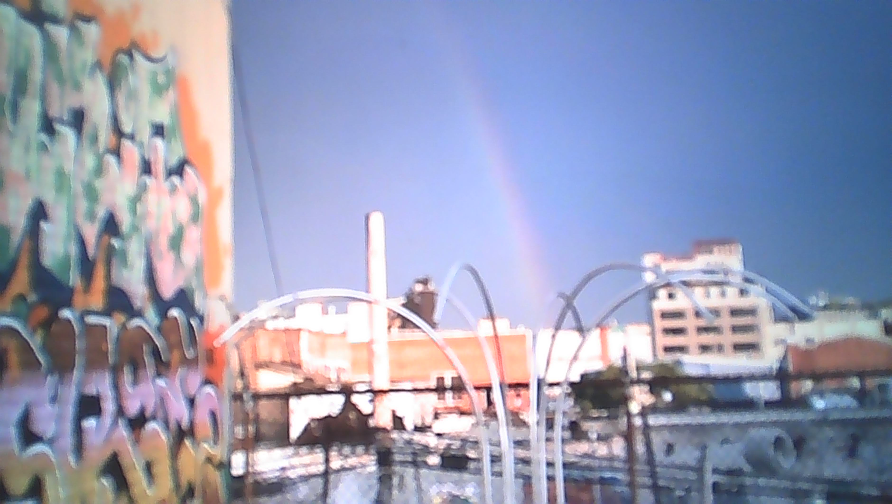
For me, solar energy is active energy.
This is energy I can only gain by actively moving.
If I stop moving forward, I lose the power of the sun — the brightest source of light in the universe.
Instead of thinking,
Why is this happening to me? or Commuting is exhausting, or Wouldn’t it be better to just stay home?
I want to enjoy every moment of my life —
and share that joy with others.
**
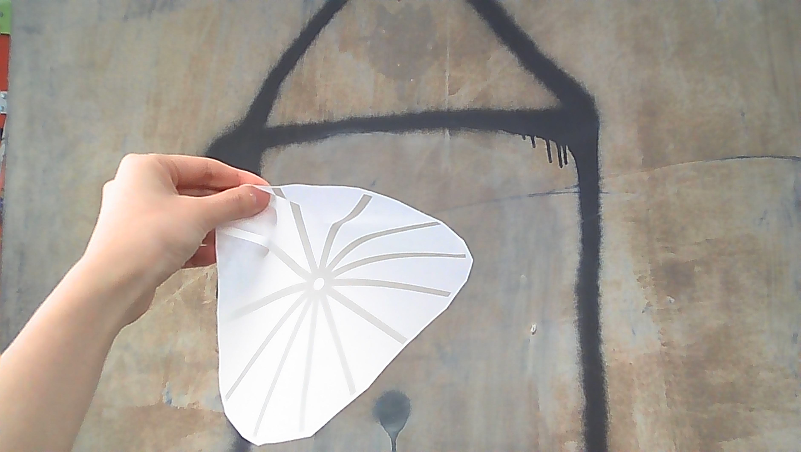
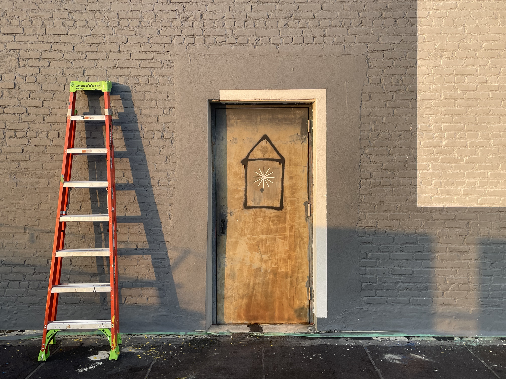
**
Another Day of Sun
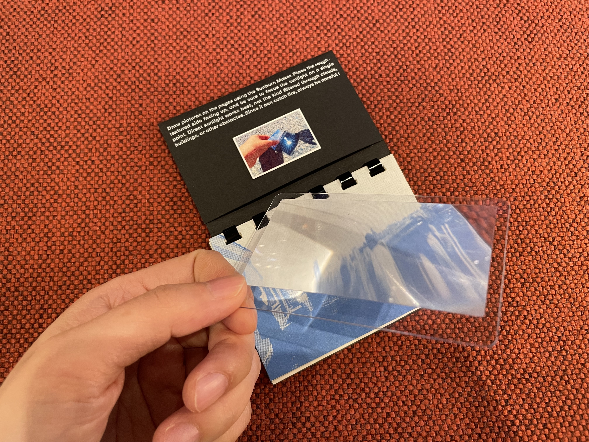
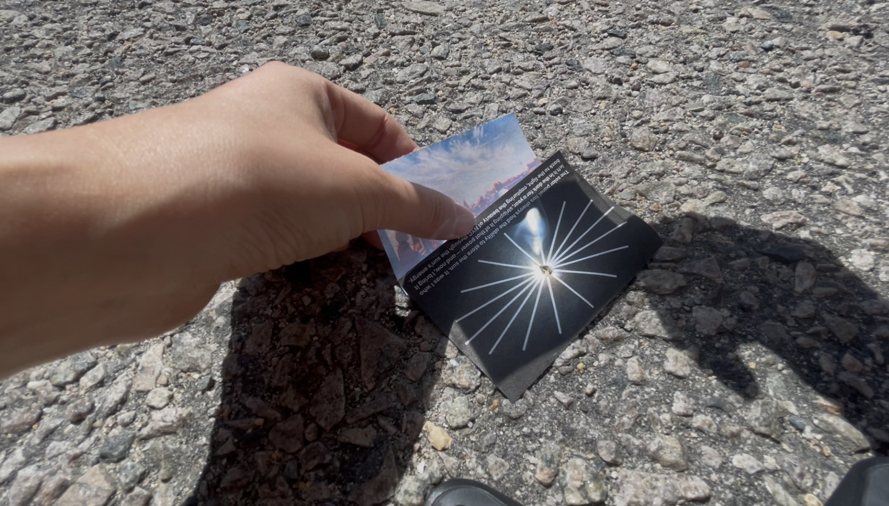
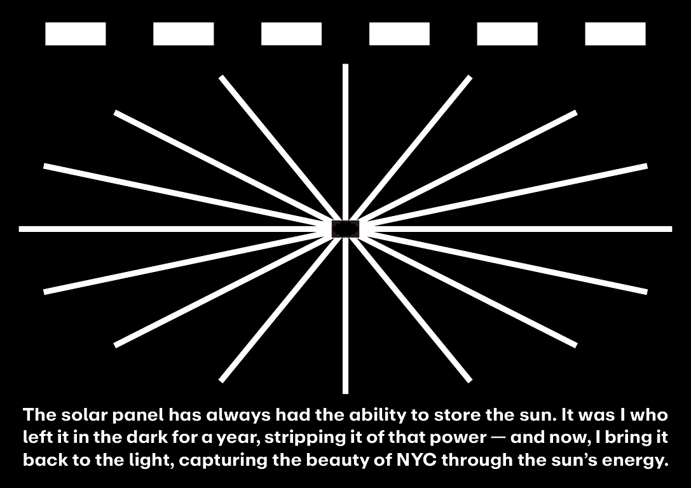
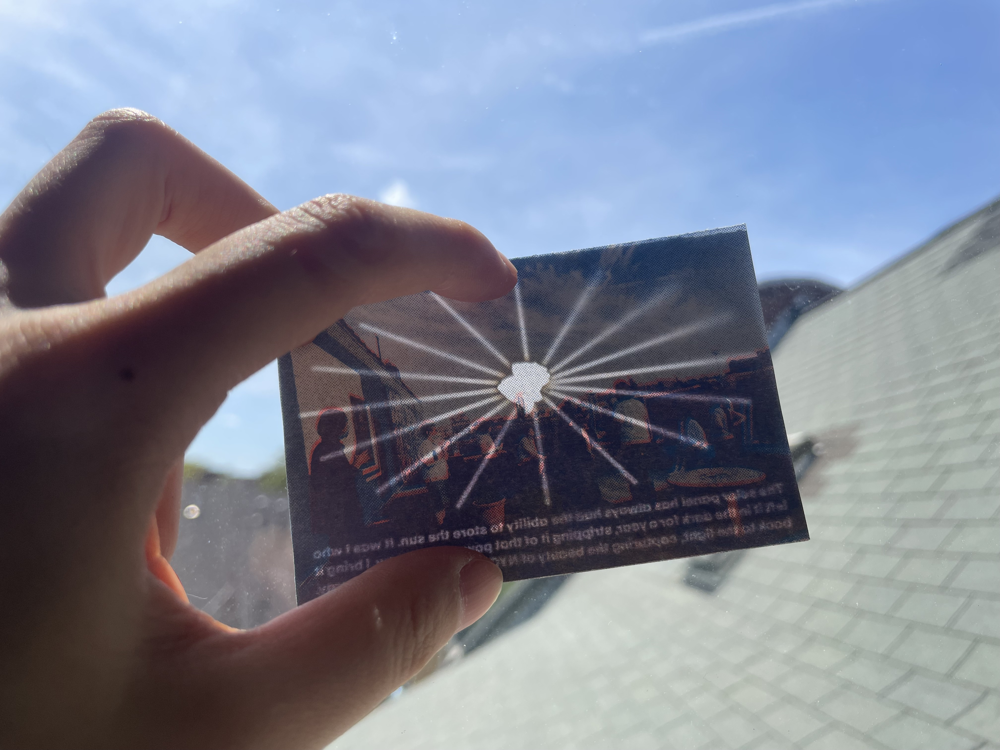
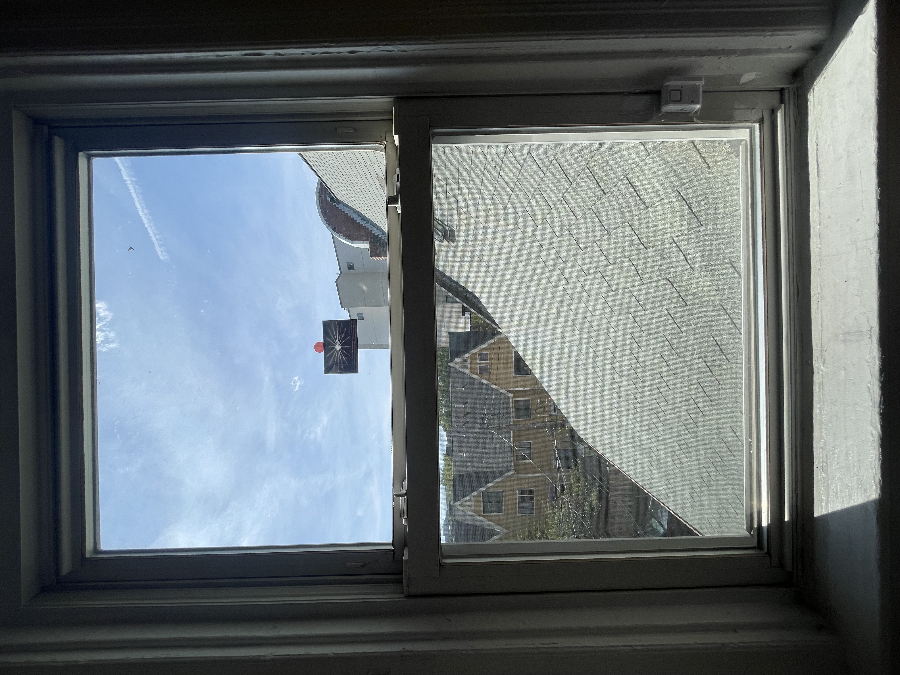
**
(Do–Re–Mi–Fa) Sol–Ra.dio
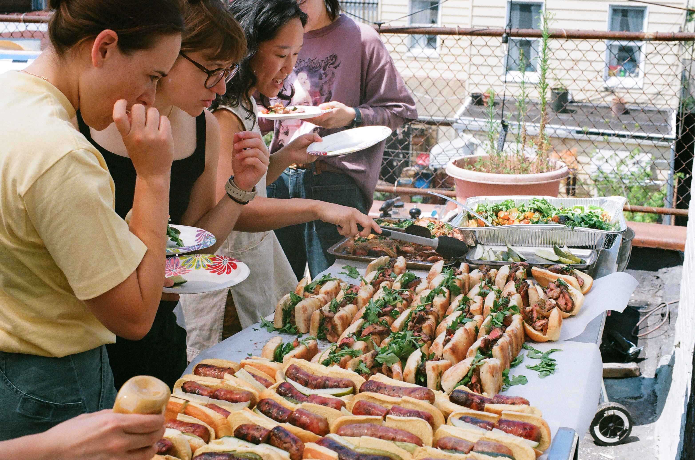
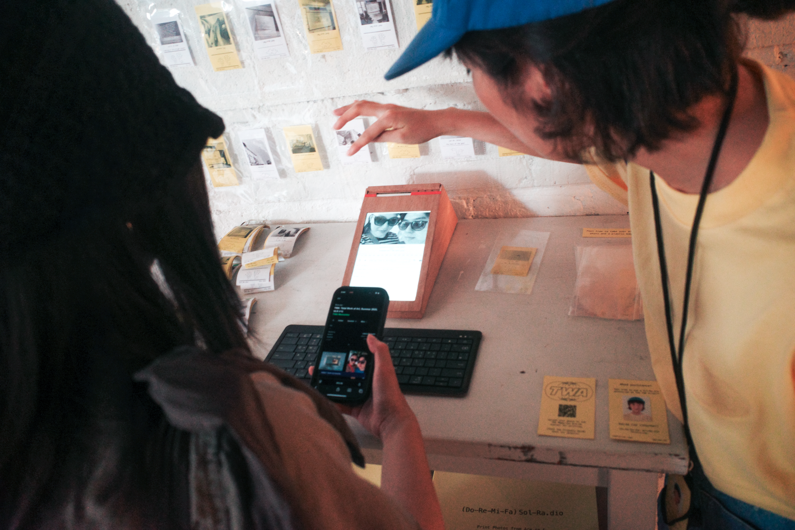
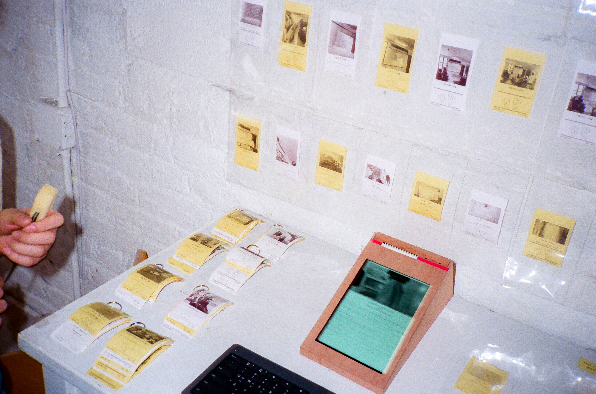
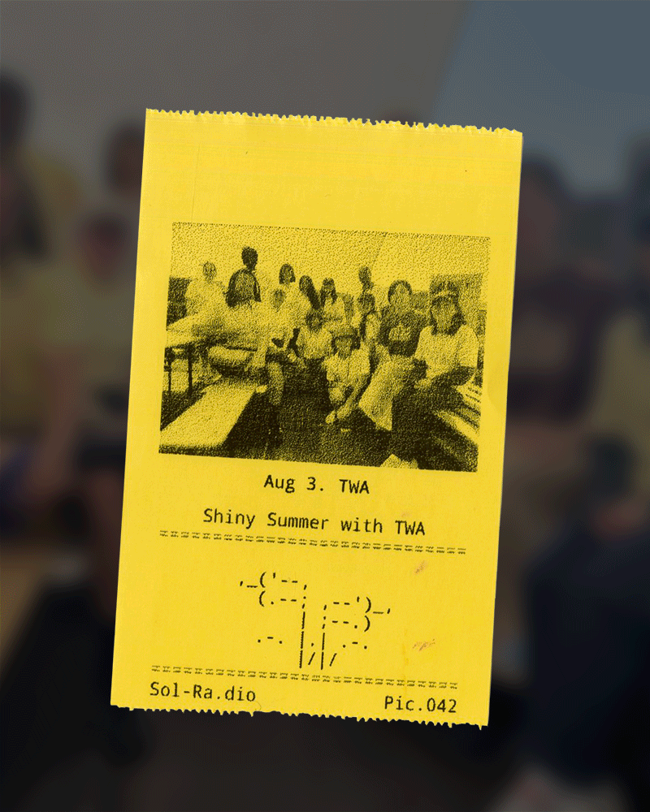
**
Little Wrens
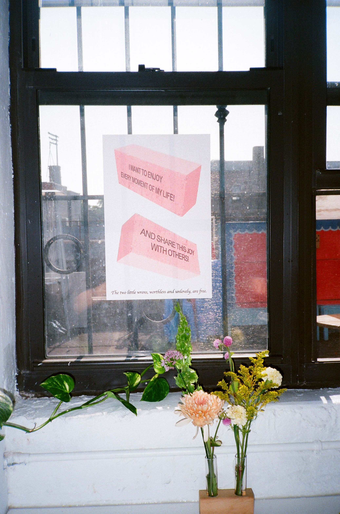
**
Are.na Camera
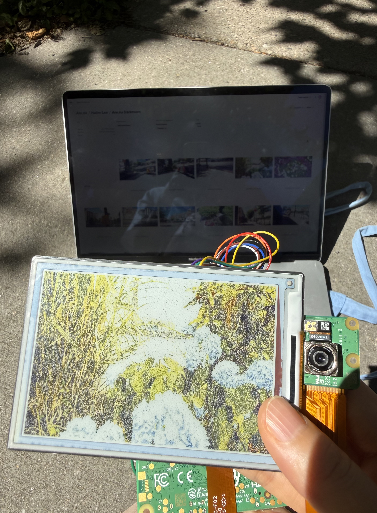
To be continued ...